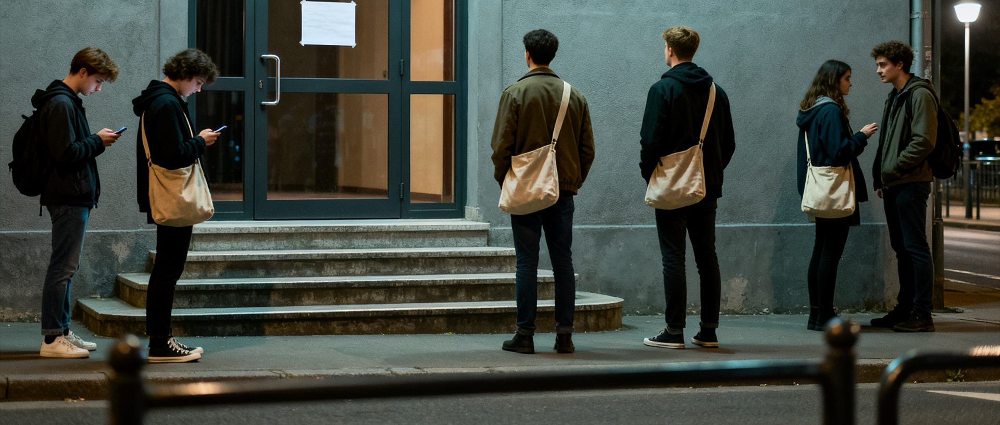
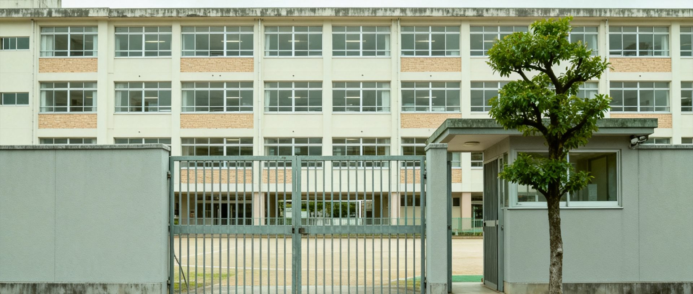

陈梦琪失踪后：最后一条动态是“明天我们准时见面哦”
陈梦琪，19岁，玉兰阁新生计划成员。2026年2月16日发布最后一条动态后失联。
陈梦琪在2026年2月16日公演中的舞台照。
图片由粉丝提供。
2月16日深夜，陈梦琪在社交平台发布了最后一条动态： “大家晚安，明天我们准时见面哦。”
第二天，她没有出现。
一个突然消失的偶像
陈梦琪，艺名“梦琪”，是本地美容机构玉兰阁旗下新生计划的公开艺人。 2025年12月17日，她完成了自己的初舞台。 此后，她保持着稳定的公开活动频率， 包括社交媒体更新、粉丝互动及小型演出。
2月16日晚，她像往常一样发布了动态， 语气轻松，没有表现出任何异常。 粉丝在评论区留言“明天见”，她回复了其中几条。
这是她最后一次公开露面。
经纪公司的回应
2月17日，玉兰阁发布公告称， 陈梦琪因“个人健康原因”暂停一切公开活动。 公告没有说明具体病情，也没有给出恢复时间。
本刊记者多次联系玉兰阁方面请求进一步说明， 对方表示“请尊重艺人隐私”。
——玉兰阁发言人
截至发稿，陈梦琪失踪后仍未再公开露面。

2月17日晚，粉丝在公演场地外等待。
最终只等到了取消通知。
父母拒绝接受采访
本刊记者曾尝试联系陈梦琪的家人。 其母亲在电话中表示：
随后挂断电话。
陈梦琪的父亲在电话中拒绝回应任何问题， 只表示“不要再来打扰我们”。
一位邻居向本刊表示，近两个月来， 陈家很少出门，偶尔有车辆停在楼下。
警方调查进展
警方在接到失踪报案后曾介入调查。 据接近案件的人士透露，负责此案的警员上月因伤调离岗位。
案件已由其他人员接手。 本刊就调查进展向警方查询，警方表示案件正在处理中， 暂不方便透露详情。
——警方发言人

陈梦琪就读过的中学。
校方未回应本刊查询。
本刊记者周岚失联
本刊调查记者周岚在跟进此案期间，于2026年2月17日失去联系。
编辑部此后未能与其取得任何联系。
本文初稿由周岚于2月中旬完成， 编辑部根据其后期的调查资料补充整理。
目前周岚已被列为失踪人口。
本文由本刊调查记者周岚完成初稿，编辑部整理后发布。
文中所有信息均来自公开资料及受访者陈述。
如果您有进一步线索，请联系本刊调查组。
调查记者周岚工作电话： 852-6123-0217